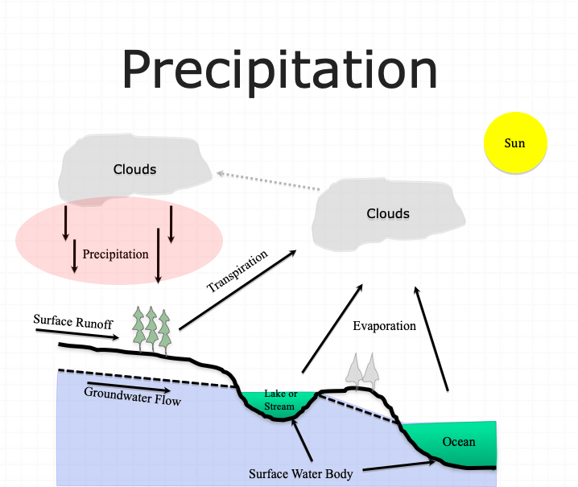

Precipitation#
Surface water hydrology really begins before the precipitate hits the ground. The form of precipitate is important (rain, sleet, hail, or snow). For example it takes about 10 inches of snow to produce the same water as 1 inch of rain. Other factors of importance are the size of the area over which the precipitation falls, the intensity of the precipitation, and its duration.

Once the precipitation hits the ground several things can happen. It can evaporate immediately, especially if the surface is hot, and relatively impervious. If the surface is dry and/or porous, the precipitate may infiltrate into the ground or may just wet the surface. The process of just wetting leaves and blades of grass is called interception. Some of the infiltrated water is returned to the atmosphere by transpiration by plants. Collectively the return to the atmosphere is called evapotranspiration. The precipitate may be trapped in small depressions (puddles). It may remain in these puddles until it evaporates or until the depressions fill and overflow. Finally it may run off directly to the nearest stream or lake to become surface water. The four “processes” (evapotranspiration, infiltration, interception, and depression storage) that reduce the amount of precipitation available for direct runoff are collectively called abstractions. In drainage engineering, the loss model is how we account for these processes.
Engineering Variables of Interest#
There are four variables of engineering interest:
Intensity: how hard it rains
Duration: how long it rains at any given intensity
Frequency: how often it rains at any given intensity and duration
Spatial Distribution: the rainfall depth over an area
Rainfall probabilities are expressed as a combination of frequency (probability), depth, and duration. The inclusion of depth and duration reflects that different “storms” can produce the same total depth, but deliver that depth over much different times
Note
A slow gentle rain for a long time versus a hard rain for a short time can have the same total depth, but vastly different hydrologic impact
Depth-Duration-Frequency#
Depth of rainfall is the accumulated depth (in a gage) over some time interval.
Duration is that time interval.
Frequency is the probability (like AEP) of observing the depth over the given duration.

An alternate to DDF is to present the magnitude as an intensity (a rate). The intensity is the ratio of an accumulated depth to some averaging time, usually the duration.
where \(D\) is the depth, and \(T_C\) is the averaging time
Note
Intensity is NOT the instantaneous rainfall rate.
The symbol \(T_C\) is the time of concentration for a watershed, if the averaging time happens to coincide with the time needed for water to flow from the most remote point in a watershed to the watershed outlet.
Intensity is related to depth and duration.

The intensity is the ratio of depth to a particular duration. For example, if the duration or averaging time is 12 hours and the accumulated depth for 12 hours is 70 mm (about 3 inches), then the average rate is 70mm/12hours = 5.8 mm/hour. This average rate, if applied over 12 hours will produce the depth of 70mm.
Conversion from Depth-Duration to Intensity-Duration is obtained by the ratio of depth to duration
Conversion from Intensity-Duration to Depth-Duration is obtained by multiplication
Intensity-Duration-Frequency#
The family of curves that depicts the relationship between the intensity, duration, and frequency of precipitation at a point is a fundamental part of the rational equation method for storm water drainage design.

Conversion from Depth-Duration to Intensity-Duration is obtained by the ratio of depth to duration
Conversion from Intensity-Duration to Depth-Duration is obtained by multiplication